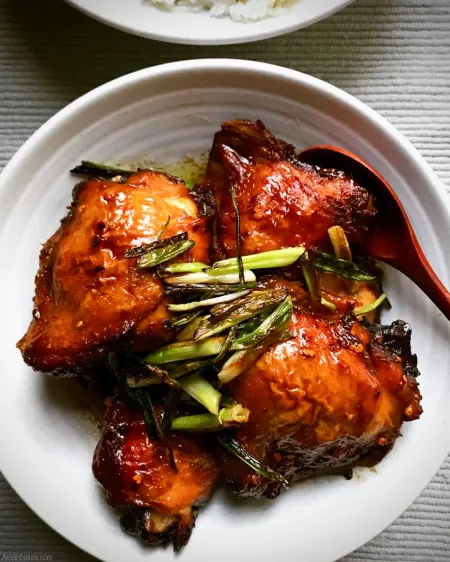

INGREDIENTS
Things you need how to cook classic adobo :)
Ingredients:
- 1/2 Kilo Chicken
- 3 pcs Dried Bay Leaves
- 4 Tbsp Soy Sauce
- 4 Tbsp Vinegar
- 3 cloves garlic, minced
- 1 medium sized onion, sliced
- 1 pc Red Chili (Siling Haba) seeded thinly sliced
- 1/3 cup water
- 3 Tbsp Cooking oil
- 1 Tsp peppercorns
- salt and pepper
- Green onions or Scallions (Dahon ng Sibuyas ) for garnish
(optional)
PROCEDURES
In a Large Wok, add Cooking oil and then Saute Onion, Garlic,
Ginger and Chicken for 8 to 10 Minutes
Add pepper, peppercorns, dried bay leaf and Siling Haba (Red Chili)
then saute for another 2 Minutes
Now add the Vinegar, water and soy sauce then bring to a Boil
Simmer for 5 minutes, add salt to taste
Garnish with Green Onions then Serve hot with Rice
Dominic R. Jimenez